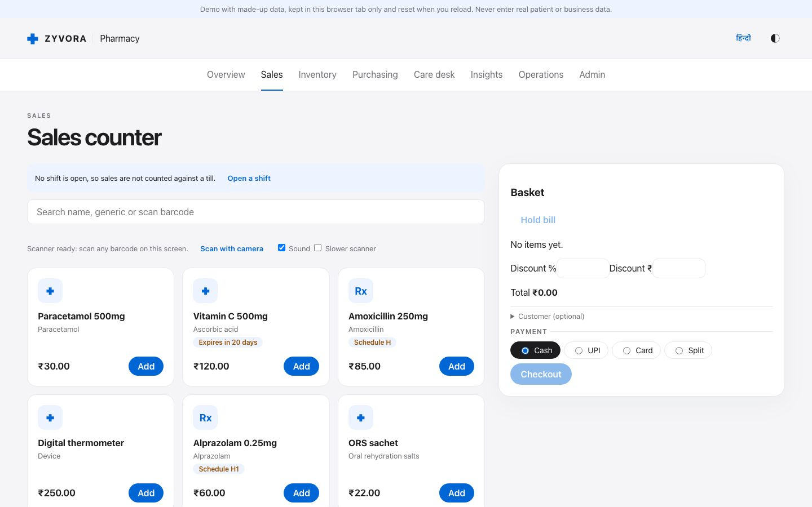
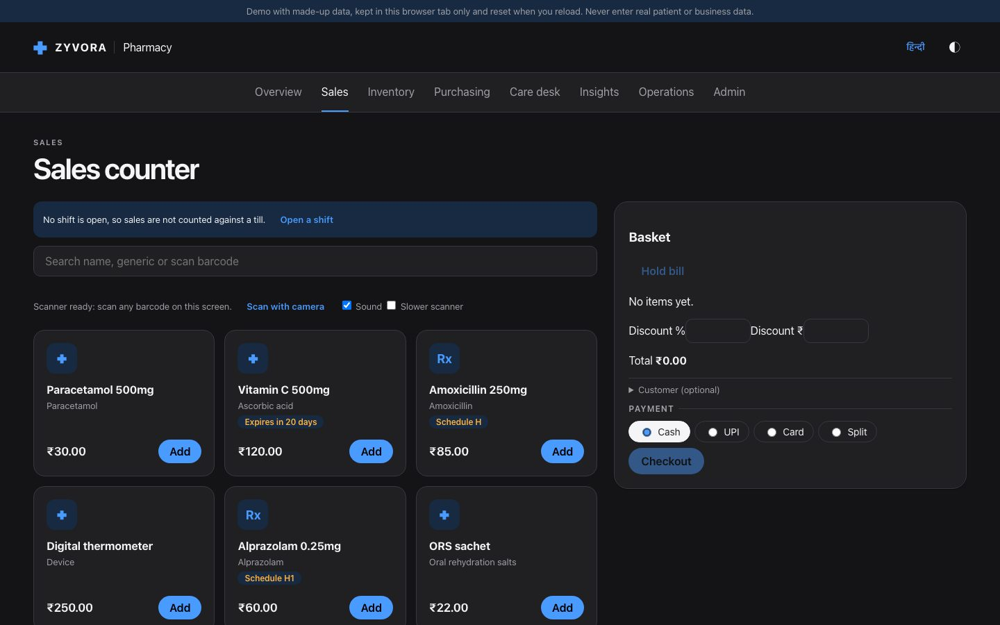
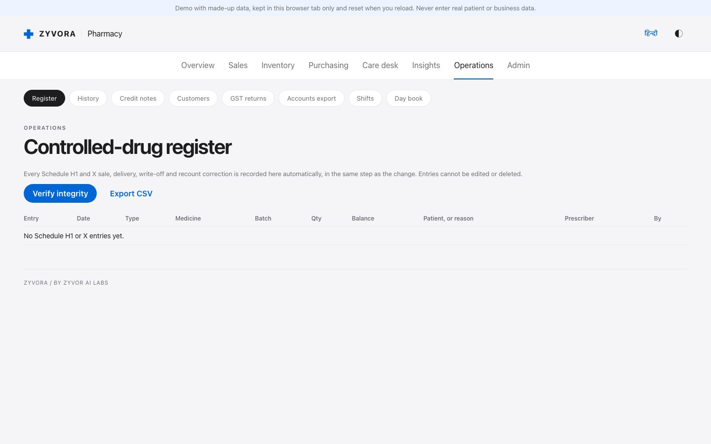
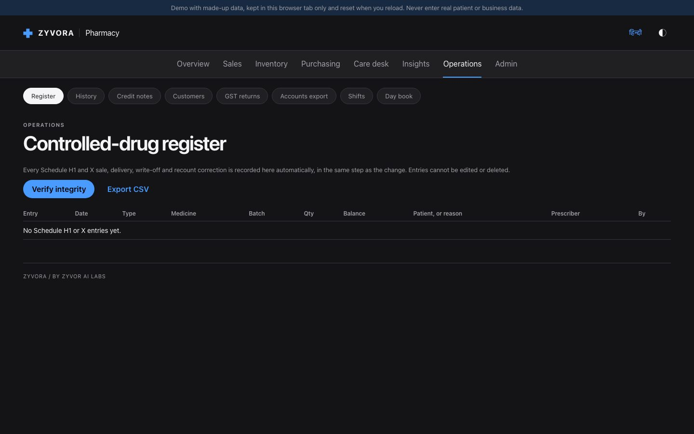
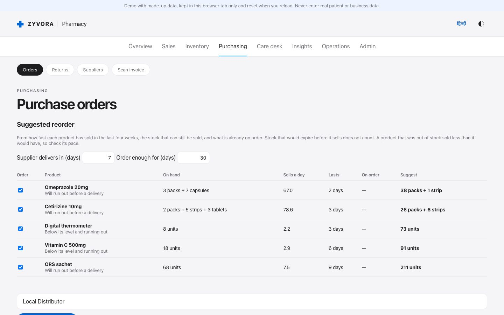
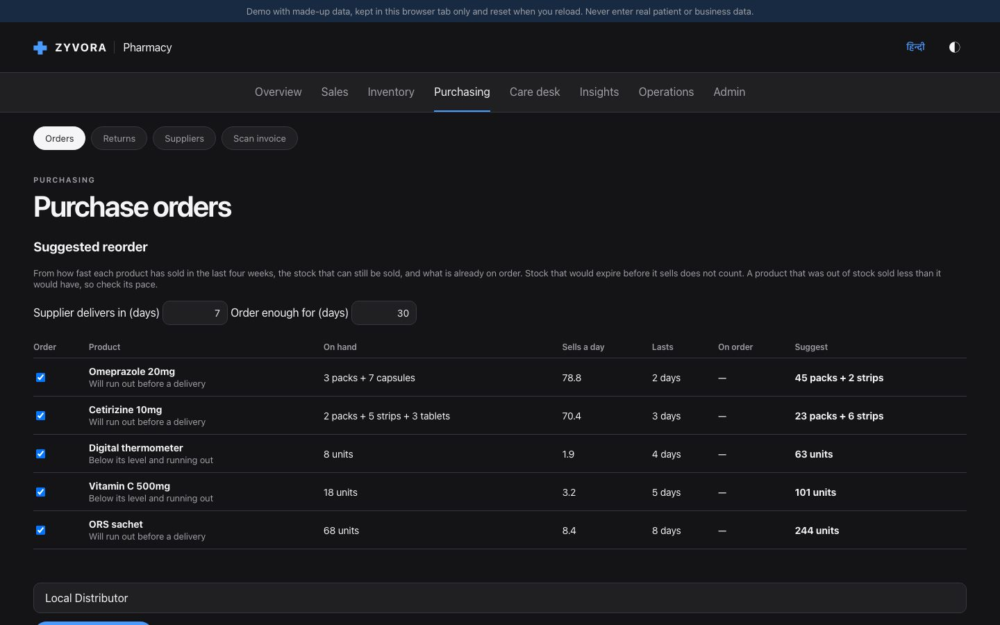
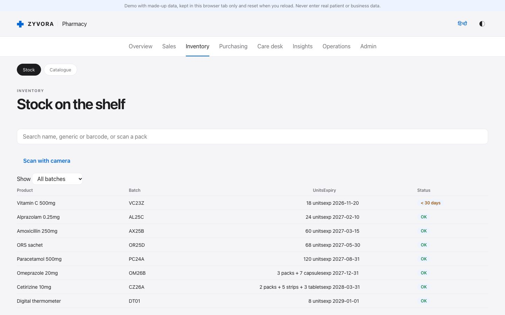
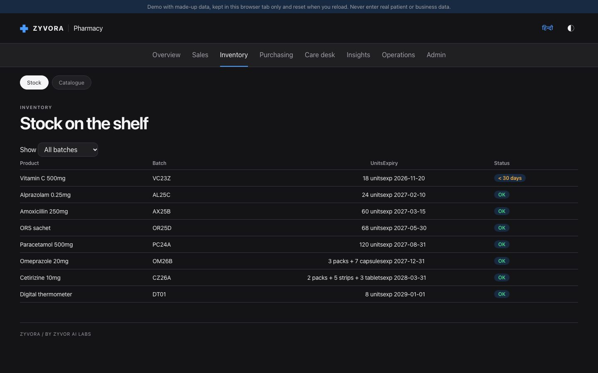
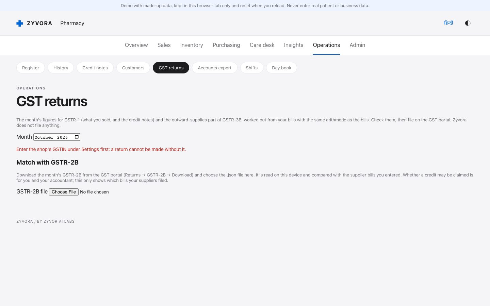
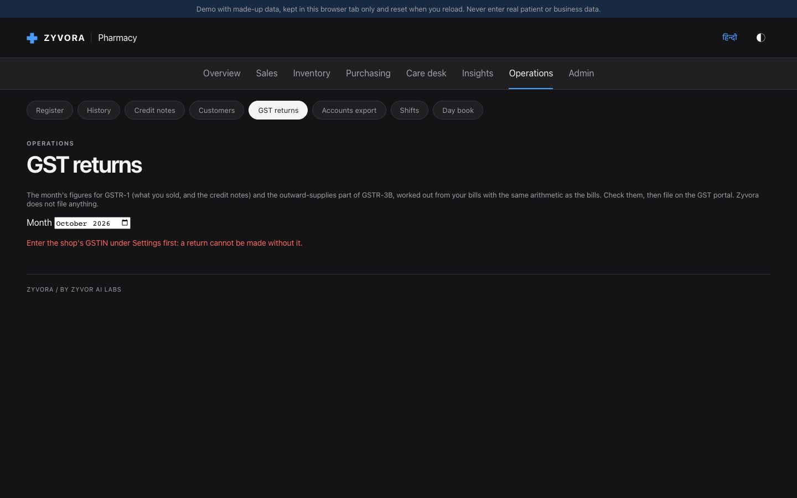

Try it
Try Zyvora Pharmacy on your own Mac.
A download, a free 30-day trial key by email, and a pharmacy full of invented products to look around. Nothing leaves your Mac. Mac only (Apple silicon).
- About 5 minutes
- Runs on your Mac
- Works offline
- Fictional data only
- Not a certified tax system
Steps
From download to counter.
1 Download and open
Download the DMG, open it and drag Zyvora Pharmacy to Applications. It is signed by Zyvor AI Labs and notarized by Apple. The first time you open it, macOS asks you to confirm: choose Open. Requires macOS 11 or later on an Apple silicon Mac. SHA-256: 2a273411f8f21fe5d98ce32e55ffac2fa8de7562770aa620d0e064eb5f92ba4a.
2 Get a free 30-day trial key
Email sales@zyvor.dev (subject: Zyvora Pharmacy 30-day trial key). In the app open Settings, Licence, paste the key and choose Activate key. It is checked on your Mac, offline. Every feature works with or without a key; nothing is ever switched off and your data is never held back.
The app opens with fictional sample products so you can look around. Do not enter real patient or business data until you have decided to run a pilot.
Step 5
A pharmacist’s test drive.
Eight things to try, about fifteen minutes. Tick them off as you go; your ticks stay in this browser only.
0 of 8 tried
Open Zyvora Pharmacy from Applications.
You should see The overview with what needs attention.
Sales: search a product (try “para”), add it, take cash.
You should see A bill number, GST split, and stock going down. The earliest-expiring batch is used first.


Add Alprazolam: the app asks for the prescriber and records it in the register.
You should see The Register screen shows a stock-out with the balance left.


Purchasing → Orders: receive stock with “10 + 1”.
You should see Paid and free units in stock; the cost per strip is spread over all of them.


Inventory shows near-expiry batches; Orders shows what to reorder and why.
You should see Arithmetic on every line. Nothing is ordered until you submit.


Operations → GST returns: pick the month.
You should see Tax collected, input credit from supplier bills, tax to pay, and the JSON downloads.


Purchasing → Returns: send expired stock back, then record the credit note with its GST.
You should see The credit note takes the tax back from the month’s input credit.
Admin → Backups: make an encrypted backup with a passphrase of your own.
You should see A file you can restore on another computer.
GST figures and files are worked out for you to check; Zyvora files nothing and is not certified GST software. Fictional data only.
Afterwards
Take it away.
Back up before you go further
Admin, Backups makes an encrypted backup you can restore on another Mac.
Remove it
Quit the app and drag Zyvora Pharmacy to the Bin. Its data folder is ~/Library/Application Support/dev.zyvor.zyvora; delete it to remove the sample data.
If something goes wrong
Common questions.
macOS says it cannot verify the app
The app is notarized by Apple. The first time you open an app downloaded from the internet, macOS asks you to confirm: choose Open (or right-click the app and choose Open).
Is there a Windows or Linux version?
No. Mac (Apple silicon) only, plus the browser demo.
What happens when the 30-day trial key ends?
Nothing is switched off and your data is never held back. Settings, Licence says the key has expired; email sales@zyvor.dev for a new one.
Can I see the source instead?
The application source is private. Ask sales what can be shared with evaluators.
Tell us how it went.
What worked, what confused you, what you wanted to see. If something failed, include your Mac model and macOS version.
Send feedback